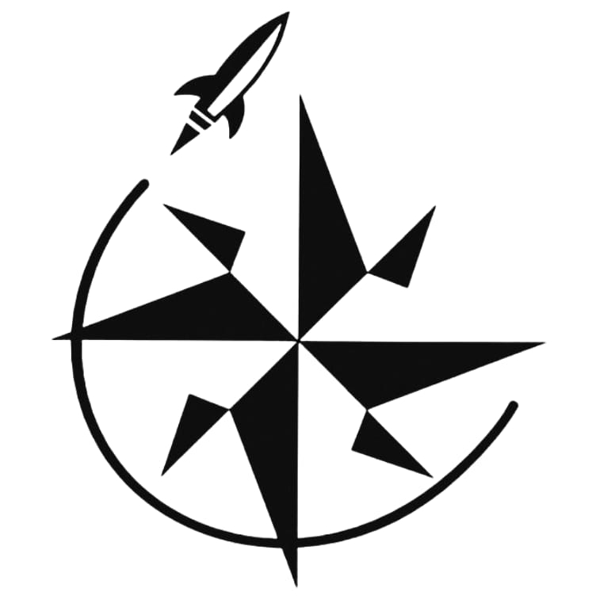
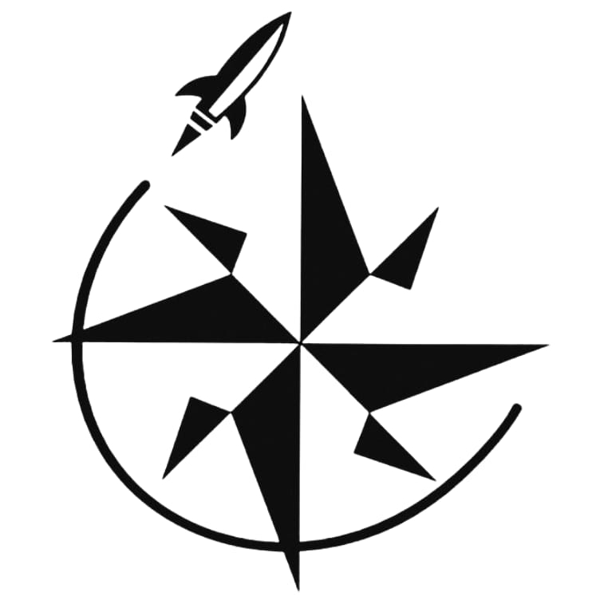
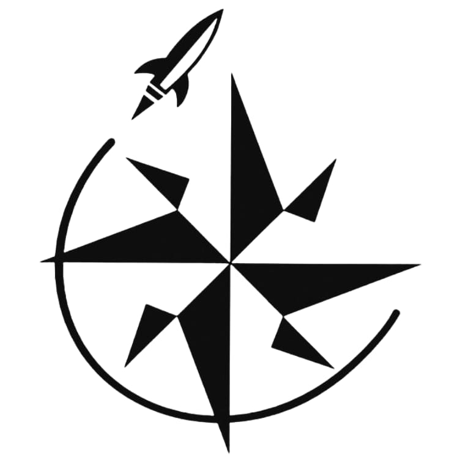

Pusula Roket Takımı
Pusula Roket Takımı, 3 Mart 2020 tarihinde Kahramanmaraş Fen Lisesi öğrencileri tarafından kurulmuştur. TEKNOFEST 2021 Roket Yarışmasına Lise Kategorisinden katılarak finale kalmıştır. Çalışmalarını 2021 yılından itibaren devam ettiren takımımız, özgün sistemler ve tasarımlar üzerinde faaliyetlerini sürdürmektedir. Takımımız bu yıl da Teknofest Roket Yarışmasına Lise Kategorisinden katılım sağlayacaktır. Takımımızın misyonu Milli Teknoloji Hamlesine destek olmak, mühendislik becerilerini kazanmak ve bu tecrübelerimizi profesyonel iş hayatına atıldığımız zaman etkin bir şekilde kullanmayı, geleceğin ana gündem konularından biri olacak uzay ve roket alanında deneyim elde etmektir. Tüm takım üyeleri Kahramanmaraş Fen Lisesi'nde öğrenim görmektedir.
